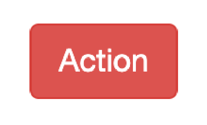
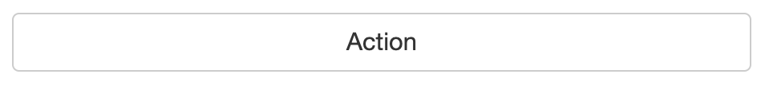

Uploading and dowloading data in RShiny
Learning Objectives
In this lesson, you will: - Implement reactive expressions - Learn how to incorporate data into your Shiny app - Add functionality to download table data from Shiny app - Download plots created in Shiny app - Create action buttons for a Shiny app
Reactive Expressions
Previously, we have seen the case of input being used to directly create outputs. However, there is third tool in the Shiny toolkit and it is called reactive expressions. Reactive expressions are useful because they take inputs and produce outputs and they cache, or store, their output. This can be very useful for three reasons:
- When a step is present multiple times in your code and this step that is either computationally intensive or requires interacting with outside databases, Shiny will only need to carry out the task once rather than each time the process is called since the output will be cached for future uses
- It makes your code cleaner because you only need to maintain the code for a previosuly repetitive step in a single place
- They are needed to use action buttons (discussed later in this section)
When we use a reactive expression, we will wrap it within a reactive() function and using a reactive() function will be critical for using an action button.
Note: You can also have multiple reactive expressions that connect to each other in between inputs and outputs.
Action Buttons
Action buttons allow the user to tell Shiny when to process data. This can be helpful when you have a computationally heavy task where you don’t want R to be trying to carry out the computation for each input value as you drag a a slider across its scale. Rather you’d only like for outputs to be computed when you have all of your input parameters set. The syntax for using an action button looks like:
On the UI side:
actionButton("inputID", "Label")On the Server side:
reactive_expression_with_action_button <- bindEvent(reactive(
<reactive_expression>
), input$<action_button_inputID>)The actionButton("inputID", "Label") line creates our action button in the UI, while bindEvent(reactive(<reactive_expression>), input$<action_button_inputID>) wraps a reactive expression within the bindEvent() function on the server side. Alternatively, you may see in others’ code using a pipe (see below), but this is equivalent code to what is listed above:
On the UI side:
actionButton("inputID", "Label")On the server side:
reactive_expression_with_action_button <- reactive(
<reactive_expression>
) >%>
bindEvent(input$<action_button_inputID>)Below is example code on how we could implement this:
# User interface
ui <- fluidPage(
# Slider for the user to select a number between 1 and 10
sliderInput("slider_input_1", "Select a number", value = 5, min = 1, max = 10),
# Slider for the user to select a number between 1 and 10
sliderInput("slider_input_2", "Select a number", value = 5, min = 1, max = 10),
# Action button to tell Shiny to evaluate the multiplication when it is clicked
actionButton("calculate", "Multiply!"),
# The text output
textOutput("product")
)
# Server
server <- function(input, output) {
# Create a reactive expression that responds to a mouse clicking the action button
multiply <- bindEvent(reactive(
input$slider_input_1 * input$slider_input_2
), input$calculate)
# Render the reactive expression as text
output$product <- renderText({
multiply()
})
}
# Run the app
shinyApp(ui = ui, server = server)This app would visualize like:
A wide variety of action button styles exist by adding the class argument to your actionButton() function. Such as:
actionButton("inputID", "Label", class = "btn-primary")Click here if you would like to see a table of availible action button styles
| Class | Description | Example Code | Example |
|---|---|---|---|
| btn-primary | Creates a dark blue button |
class = “btn-primary”
|
|
|
btn-default / btn-secondary |
Creates a white button |
class = “btn-default” / class = “btn-secondary”
|
|
| btn-warning | Creates an orange button |
class = “btn-warning”
|
|
| btn-danger | Creates a red button |
class = “btn-danger”
|
 |
| btn-info | Creates a light blue button |
class = “btn-info”
|
|
| btn-lg | Creates a larger button |
class = “btn-lg”
|
|
| btn-sm | Creates a smaller button |
class = “btn-sm”
|
|
| btn-link | Creates a hyperlink-style button |
class = “btn-link”
|
|
| btn-block | Creates a button the width of the page |
class = “btn-block”
|
 |


Note: You can have multiple classes for a given action button as long as each class is separated by a space. For example, if you wanted a large, dark blue action button that goes across the entire browser, then you could use:
class = "btn-primary btn-lg btn-block". However, whichever non-white color you put last in your list of classes will be the color of the button.
Note:
bindEvent()is a newer function and when coupled withobserve()andreactive()functions, it replacesobserveEvent()andeventReactive()functions, respectively. It is recommended to usebindEvent()moving forward as it is more flexible, but you may still run across code that utilizesobserveEvent()andeventReactive().
Isolate
In Shiny, you may find that you will want to limit the reactivity. However, you might want only partial reactivity and this is where the isolate() feature can be quite helpful. You can create a non-reactive scope around an expression using isolate. The syntax for using isolate() is:
isolate(<non_reactive_expression>)We can create a similar app to the one above but edit the code to use isolate. In this example, we will see that the first slider is completely reactive, however the second slider is only reacts once the action button has been clicked:
# User interface
ui <- fluidPage(
# Slider for the user to select a number between 1 and 10
sliderInput("slider_input_1", "Select a number", value = 5, min = 1, max = 10),
# Slider for the user to select a number between 1 and 10
sliderInput("slider_input_2", "Select a number", value = 5, min = 1, max = 10),
# The button that will re-process the calculation containing elements within the isolate function after it has been clicked
actionButton("calculate", "Multiply!"),
# The output text
textOutput("product")
)
# Server
server <- function(input, output) {
# Renders the text for the product of the values from the two sliders
# Note that the first slider is not inside an isolate function and will thus react in real-time, while the second slider is within an isolate function, so it will only be evaluated when the action button has been clicked
output$product <- renderText({
input$calculate
input$slider_input_1 * isolate(input$slider_input_2)
})
}
# Run the app
shinyApp(ui = ui, server = server)This app would look like:
Note: If we had used
isolate(input$slider_input_1 * input$slider_input_2)instead ofinput$slider_input_1 * isolate(input$slider_input_2), then this app would function similarly to the app from the previous section since there are now two sliders’ widget inputs are within theisolate()function.
Uploads and Downloads
Transferring files to and from an app is a common feature of Shiny apps. You can use it to upload data for analysis, download the results of an analysis or a figure you generated. Now we will introduce you to functions that help with file handling in addition to some other advanced topics which tie in nicely (and are helpful when running these functions).
Uploading data
Often apps are created such that one can explore their own data in some way. To allows users to upload their own data into the app we use the fileInput() function on the UI side:
fileInput("<input_fileID>", "<Text_above_file_upload>")There are some additional options that you might want to consider when using the fileInput() function.
| Argument | Description | Example |
|---|---|---|
| multiple | Allows the user to upload multiple files* | multiple = TRUE |
| accept | Limit the file extensions that can be selected by the user | accept = ".csv" |
| placeholder | Text to be entered as a placeholder instead of the “No file selected” default | placeholder = "Waiting for file selection" |
| buttonLabel | Text to be entered onto the upload button instead of “Browse…” default | buttonLabel = "Select File..." |
* Uploading multiple files can be a bit tricky and is outside of the scope of this workshop, but it can be done.
On the server side it would look like:
uploaded_file <- reactive({
req(input$<input_fileID>)
read.table(input$<input_fileID>$datapath)
})
output$table <- renderDT(
uploaded_file()
)The first part of this code is creating the reactive expression uploaded_file(). We require that the file exist with req(input$<input_fileID>), otherwise Shiny will return an error until we upload a file. Then we read in the file with a function from the read.table() family of functions.
The example app for this would look like:
# User interface
ui <- fluidPage(
# File upload button
fileInput("input_file", "Upload your file"),
# The output table
DTOutput("table")
)
# Server
server <- function(input, output) {
# Create a reactive expression that requires a file have been uploaded and reads in the CSV file that was uploaded
uploaded_file <- reactive({
req(input$input_file)
read.csv(input$input_file$datapath, header = TRUE, row.names = 1)
})
# Renders the reactive expression as a table
output$table <- renderDT(
uploaded_file()
)
}
# Run the app
shinyApp(ui = ui, server = server)This app would look like:
Downloading Analysis
In the course of doing your analyses, it is likely that you will get to a point where you want to download data stored in a data frame or a plot that you’ve created. Shiny also provides functionality to do this. When you are interested in downloading data or plots, you are going to want to use the downloadButton() (UI side) and downloadHandler() (server side) functions.
Downloading a Data Frame
If you have a data frame that you want to download then the important pieces of syntax are:
On the UI side:
downloadButton("<download_buttonID>", "Download the data .csv")The download button is very similar to the actionButton() function that we’ve recently explored. In fact, it also accepts the class argument(s) similar to the actionButton() function.
On the server side:
output$<download_buttonID> <- downloadHandler(
filename = function() {
"<your_placeholder_filename>.csv"
},
content = function(file) {
write.csv(<your_data_frame>, file, quote = FALSE)
}
)On the server side, we need to use the downloadHandler() function. The downloadHandler() function has two main arguments:
filename- This is the default filename that will pop-up when you try to save the file.content- This is the argument where you write your data frame to a file. In this case, we are writing to a.csv, so we usewrite.csv(). We are writing it to a temporary object calledfilethatdownloadHandler()recognizes as the output fromcontent.
An example app using this is similar to the brushed points example we used previously:
# User interface
ui <- fluidPage(
# Plot the output with an interactive brushing argument
plotOutput("plot", brush = "plot_brush"),
# The output table
DTOutput("table"),
# Download button
downloadButton("download_button", "Download the data .csv")
)
# Server
server <- function(input, output) {
# Render a plot from the built-in mtcars dataset
output$plot <- renderPlot(
ggplot(mtcars) +
geom_point(aes(x = mpg, y = disp))
)
# Reactive expression to hold the brushed points
brushed_points <- reactive(
brushedPoints(mtcars, input$plot_brush)
)
# Render a table from brushed points the reactive expression is caching
output$table <- renderDT({
brushed_points()
})
# Download the data
output$download_button <- downloadHandler(
# The placeholder name for the file will be called mtcars_subset.csv
filename = function() {
"mtcars_subset.csv"
},
# The content of the file will be the contents of the brushed points reactive expression
content = function(file) {
write.csv(brushed_points(), file, quote = FALSE)
}
)
}
# Run the app
shinyApp(ui = ui, server = server)In the above script, we tweaked our script to allow us to download the table containing the brushed points.
- We added a download button to our UI with
downloadButton("download_button", "Download the data .csv") - We moved our
brushedPoints()function out ofrenderDT()and placed it within areactive()function since we will be calling it twice, once in therenderDT()function and again when we write our data in thedownloadHandler()function - Within the
downloadHandler()function we provided a filename to use as a placeholder ("mtcars_subset.csv") as well as defining the content of our.csvfile (write.csv(brushed_points(), file, quote = FALSE))
This app looks like:
Downloading a plot
Downloading a plot is similiar to downloading a table. It also uses the downloadButton() and downloadHandler() functions and the arguments are largely similar. The syntax looks like:
On the UI side:
downloadButton("<download_buttonID>", "Download the data .png")On the server side:
output$<download_buttonID> <- downloadHandler(
filename = function() {
"<your_placeholder_filename>.png"
},
content = function(file) {
png(file)
print(<your_plot>)
dev.off()
}
)We can modify our first plot app to allow us to download the plot:
# User Interface
ui <- fluidPage(
# Dropdown menu to select the column of data to put on the x-axis
selectInput("x_axis_input", "Select x-axis", choices = colnames(mtcars)),
# Dropdown menu to select the column of data to put on the y-axis
selectInput("y_axis_input", "Select y-axis", choices = colnames(mtcars), selected = "disp"),
# The output plot
plotOutput("plot"),
# Download button
downloadButton("download_button", "Download the data .png")
)
# Server
server <- function(input, output) {
# Reactive expression to hold the scatter plot
mtcars_plot <- reactive({
ggplot(mtcars) +
geom_point(aes_string(x = input$x_axis_input, y = input$y_axis_input))
})
# Render plot from the reactive expression
output$plot <- renderPlot({
mtcars_plot()
})
# Download the data
output$download_button <- downloadHandler(
# The placeholder name for the file will be called mtcars_plot.png
filename = function() {
"mtcars_plot.png"
},
# The content of the file will be the contents of the mtcars_plot() reactive expression
# Note how we need to encapsulate the plot in png() and dev.off() functions
# The syntax also demands that we put print() around our plot
content = function(file) {
png(file)
print(mtcars_plot())
dev.off()
}
)
}
# Run the app
shinyApp(ui = ui, server = server)Some key aspects of this app are: - Similarly to when we downloaded the data frame, we have moved our plot function to be within a reactive() function (called mtcars_plot). - Our renderPlot() function called the mtcars_plot() reactive expression. - We call our downloadHandler() function and provide it a default file name of "mtcars_plot.png" and for content, we call it mostly the same way as we would write a plot out in R; calling the png() function, plotting our plot, then closing the device with the dev.off() function. The only thing of note here is that we go need to wrap the mtcars_plot() reactive expression within a print() function.
This app looks like:
Exercise
Create an app in R Shiny that lets users upload the iris dataset that can be found here. Then create a scatterplot where the user selects x-axis and y-axis from separate selectInput() menus, containing the values Sepal.Length, Sepal.Width, Petal.Length and Petal.Width. Lastly, allow the user to be able to download the boxplot to a .png.
Step 1. Write the UI with the appriopriate fileInput(), selectInput(), plotOutput and downloadButton() functions
Step 2. Write the server side with:
- A
reactive()function for reading in the CSV file - A
reactive()function to create the ggplot figure - A
renderPlot()function to render the ggplot figure from the reactive expression - A
downloadHandler()function for downloading the image
Click here to see the solution
# User Interface
ui <- fluidPage(
# Upload the file
fileInput("input_file", "Upload file"),
# Select from the dropdown menu the column you want on the x-axis
selectInput("x_axis_input", "Select x-axis", choices = c("Sepal.Length", "Sepal.Width", "Petal.Length", "Petal.Width")),
# Select from the dropdown menu the column you want on the y-axis
selectInput("y_axis_input", "Select y-axis", choices = c("Sepal.Length", "Sepal.Width", "Petal.Length", "Petal.Width")),
# The output plot
plotOutput("plot"),
# The download plot button
downloadButton("download_button", "Download the data .png")
)
# Server
server <- function(input, output) {
# Reactive expression to hold the uploaded data
iris_data <- reactive({
req(input$input_file)
read.csv(input$input_file$datapath)
})
# Reactive expression to create a scatterplot from the uploaded data and user selected axes
iris_plot <- reactive ({
ggplot(iris_data()) +
geom_point(aes_string(x = input$x_axis_input, y = input$y_axis_input))
})
# Render the plot from the iris_plot() reactive expression
output$plot <- renderPlot({
iris_plot()
})
# Download the data
output$download_button <- downloadHandler(
# The placeholder name for the file will be called iris_plot.png
filename = function() {
"iris_plot.png"
},
# The content of the file will be the contents of the iris_plot() reactive expression
content = function(file) {
png(file)
print(iris_plot())
dev.off()
}
)
}
# Run the app
shinyApp(ui = ui, server = server)
This lesson has been developed by members of the teaching team at the Harvard Chan Bioinformatics Core (HBC). These are open access materials distributed under the terms of the Creative Commons Attribution license (CC BY 4.0), which permits unrestricted use, distribution, and reproduction in any medium, provided the original author and source are credited.